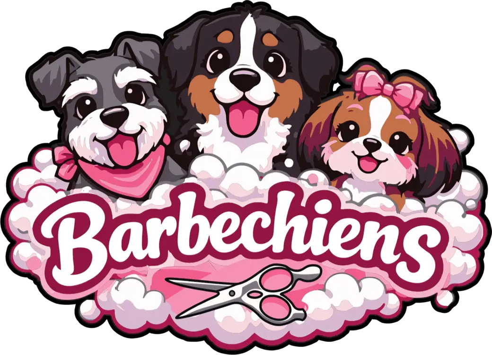
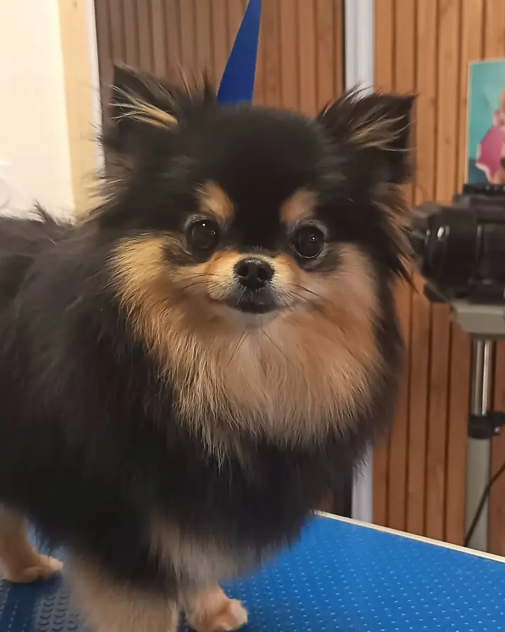
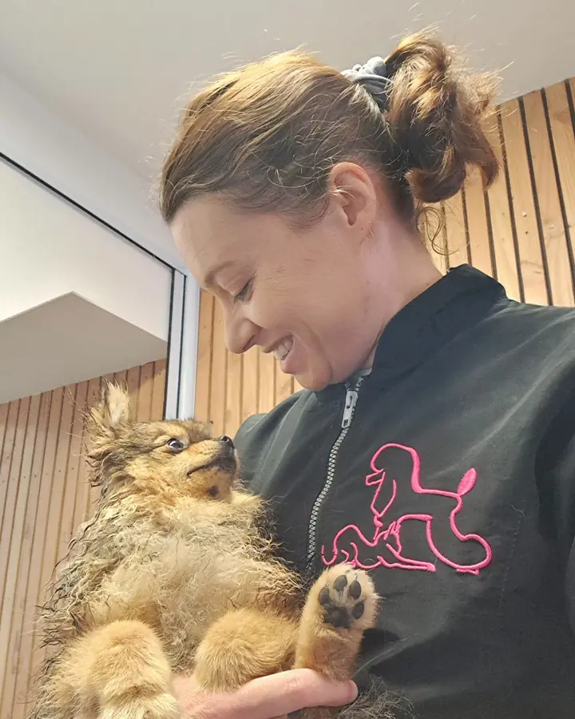
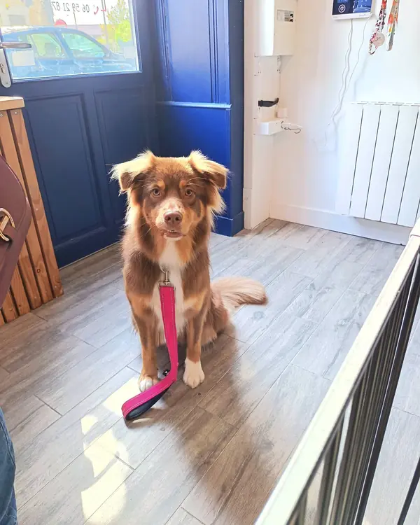
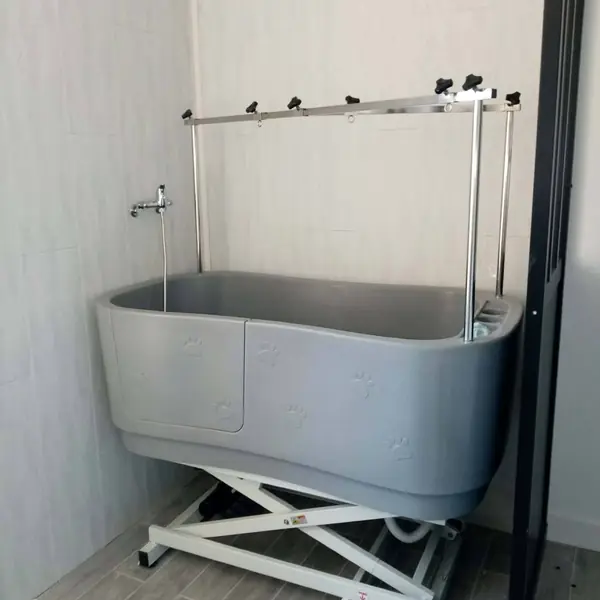
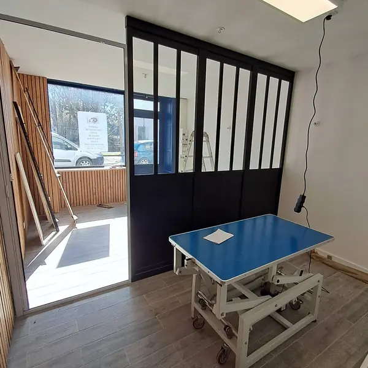
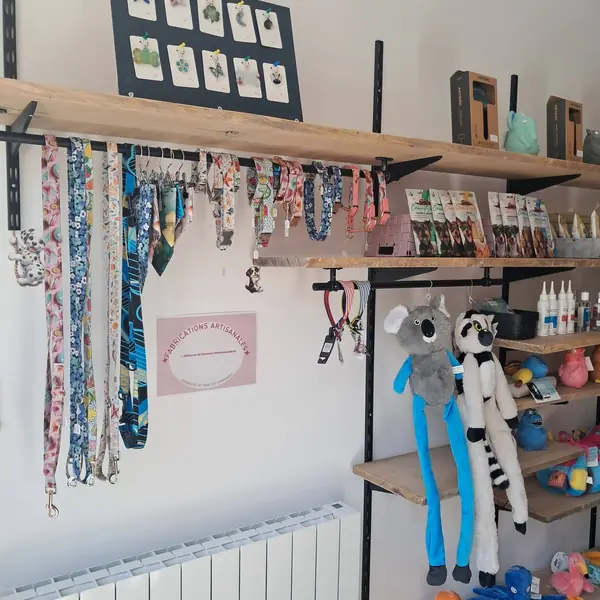
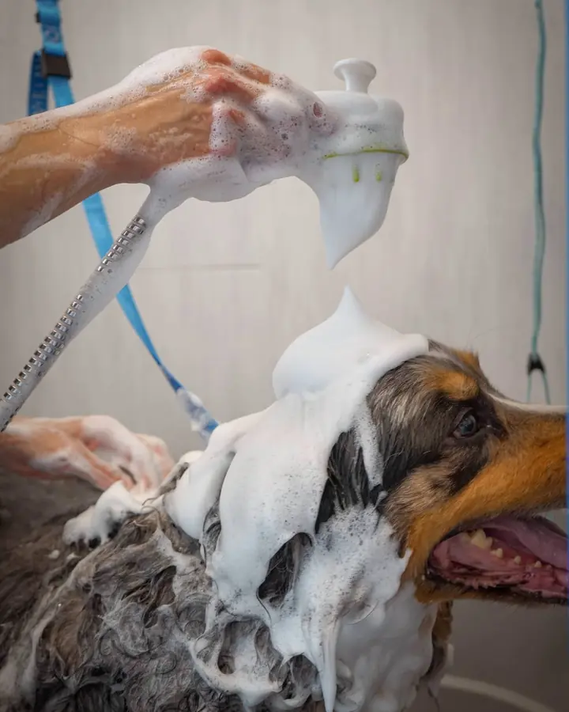
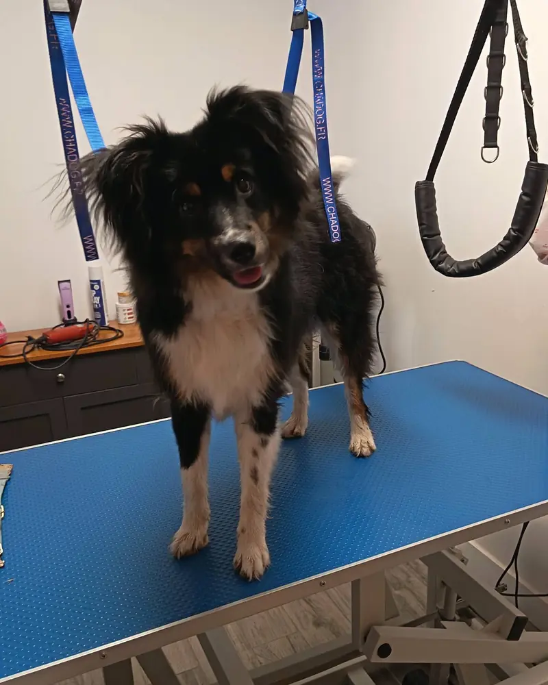

Salon de toilettage canin · Barbezieux-Saint-Hilaire

, salon de toilettage canin à Barbezieux-Saint-HilaireDu plus petit au plus grand des chiens
Bain, brushing, coupe aux ciseaux, tonte, épilation… Depuis le 13 avril 2026, Pauline chouchoute vos compagnons au 25 avenue Félix Gaillard, sur rendez-vous.
Séance photo de Noël samedi 21 novembre, sur réservation


Le salon
Pauline, ses ciseaux et beaucoup de patience
Barbechiens a ouvert ses portes le lundi 13 avril 2026, au 25 avenue Félix Gaillard. Derrière la table bleue, Pauline accueille tous les chiens : le petit yorkshire comme le terre-neuve qui prend toute la baignoire.
Ici, on prend le temps. Un chiot de cinq mois découvre la table et le pulseur sans brusquerie, une chienne stressée repart « avec son plus beau sourire », un papi de quinze ans ressort « détendu et heureux ». Chaque passage se raconte ensuite, photo à l’appui, sur la page Facebook du salon.
Le confort et le bien-être de votre chien sont ma priorité !
- 350+photos publiées depuis l’ouverture
- 5,0/5sur Google
- 6mois de bains et de câlins
Le salon, côté coulisses
-

Une baignoire qui descendMontée sur vérin, comme les tables : même les grands gabarits y entrent sans être portés. -

Une verrière et la table bleueLa table où chaque toutou prend la pose, à la bonne hauteur pour lui comme pour Pauline. -

Un coin boutiqueColliers, laisses, bandanas, jouets et peluches, à emporter en repartant.
Les soins
Le menu du salon
Du simple bain à la coupe complète : choisissez un soin pour voir ce qu’il change, photos du salon à l’appui.

-
Shampoing adapté au pelage, rinçage soigné, séchage au pulseur puis brushing : le poil ressort propre, léger et gonflé.
Pour tous les chiens
-
Après le bain, les finitions aux ciseaux : tête, pattes, contours. La silhouette est nette, la longueur reste.
Pour bichons, spitz, goldens, bergers australiens…
-
Coupe longue ou courte, selon la race et vos envies : on en parle ensemble avant de commencer.
Pour caniches, yorkshires, shih tzus…
-
Une coupe courte uniforme pour passer l’été tranquille, ou une tonte mi-longue pour enlever de l’épaisseur sans tout raser.
Pour cockers, doodles, chiens à poil épais…
-
Pour les poils durs, le poil mort est retiré à la main : le pelage garde sa texture et sa couleur. « Qualité de l’épilation », note un client.
Pour teckels à poil dur, terriers…
-
Le sous-poil mort est retiré, les nœuds défaits en douceur. Votre chien ressort « plus léger pour profiter de l’été »… et le parquet s’en souvient.
Pour bergers, samoyèdes, spitz, cockers bien poilus…
-
Nettoyage des oreilles et du contour des yeux, avec douceur et sans se presser.
Pour tous, surtout les grandes oreilles
-
Découvrir la table, l’eau et le bruit du pulseur dès les premiers mois, en douceur. Comme le dit Pauline, « plus tard, ce sera une routine ».
Pour les chiots, dès quelques mois
-
Colliers, laisses, bandanas, jouets et peluches : une sélection en vente au salon.
Pour repartir beau et bien équipé
Le tarif dépend de la race, de la taille, de l’état du pelage et du soin choisi : demandez votre devis par SMS au 06 59 21 87 02.
−10 %si votre chien revient entre 4 et 6 semainesPetit jeu
À vous de shampouiner !
Ce loulou attend dans la baignoire. Frottez-le pour le couvrir de mousse, puis passez le pulseur pour le sécher : vous découvrirez comment il est reparti. Les deux photos sont vraies, prises au salon.

Tout propre, tout beau !
Voilà le vrai résultat. Pour le vôtre, c’est Pauline qui tient le pulseur.
- 1. ShampoingFrottez la photo pour la couvrir de mousse.
- 2. PulseurSéchez : la mousse s’envole, l’après apparaît.
- 3. Ta-da !Admirez le travail.
Mousse 0 %
La galerie
Les beaux gosses de la semaine
Chaque toutou qui passe au salon a droit à sa photo sur la table bleue. En voici 178, des plus petits aux plus grands. Touchez une photo pour l’agrandir.
Photos publiées par Barbechiens sur sa page Facebook.
Le carnet du salon
De la pièce vide au bonnet de Noël
Les grandes étapes de Barbechiens, racontées par les photos et les affiches du salon.
-
Avant l’ouverture
Les travaux
Étagères en bois, verrière noire, baignoire et tables sur vérin : le salon prend forme au 25 avenue Félix Gaillard.
-
Samedi 11 avril 2026
Portes ouvertes
De 9 h à 16 h, on visite, on fait connaissance, et le premier rendez-vous réservé ce jour-là bénéficie de 10 % de remise.
-
Lundi 13 avril 2026
Ouverture !
Les premiers clients montent sur la table bleue. Depuis, plus de 350 photos de toutous ont été publiées sur la page du salon.
-
Au fil des semaines
La remise fidélité
−10 % pour les toutous qui reviennent entre 4 et 6 semaines après leur dernier passage. Calculer sa fenêtre.
-
L’été
Stores baissés, salon ouvert
Pendant les fortes chaleurs, le salon garde ses horaires et ferme ses stores pour rester au frais. Le bien-être des chiens avant tout.
-
Fin d’été
Attention aux aoûtats
Ces petites bêtes orange se cachent dans l’herbe et démangent fort : on surveille les pattes, le ventre et les oreilles.
-
Samedi 21 novembre 2026 À venir
Séance photo de Noël
De 9 h à 12 h, sur réservation : « parce que nos toutous aussi ont droit à la magie de Noël ! »
Événement · sur réservation
Séance photo de Noël
« Parce que nos toutous aussi ont droit à la magie de Noël ! »
Le samedi 21 novembre 2026, de 9 h à 12 h, le salon sort le bonnet rouge pour un portrait de fête de votre toutou. C’est sur réservation : pensez à demander votre créneau.
Plus que
Remise fidélité
Revenez entre 4 et 6 semaines, gagnez 10 %
Si votre poilu revient entre 4 et 6 semaines après son dernier toilettage, vous économisez 10 %. Le bon rythme pour les poils qui poussent sans cesse, et un pelage qui reste facile à entretenir.
Votre fenêtre fidélité
Choisissez une date
Jour d’ouverture dans la fenêtre Fermé (mercredi, dimanche)
Demander un créneau dans ma fenêtreLes avis
Ils en parlent mieux que nous
Un immense merci à Pauline pour son travail exceptionnel avec mon chien Graffiti. À 15 ans, Graffiti mérite toute la douceur et l’attention possible, et Pauline a été formidable avec lui. Il est ressorti magnifique, parfaitement toiletté, détendu et heureux. On sent immédiatement l’amour des animaux, la patience et le professionnalisme. Je recommande les yeux fermés ❤️
La réponse de Pauline : « Sa grosse sieste après le toilettage est la meilleure des récompenses 😄 »
Pauline est vraiment professionnelle, et surtout une patience et un amour avec nos petits chiens. Je la recommande.
Gentillesse avec les chiens et les clients, qualité de l’épilation, propreté du magasin.
Super professionnelle qui aime les chiens, et qui s’est bien occupée de notre chienne Toffee. Merci pour sa gentillesse.
Rendez-vous
Un SMS, et on s’organise
Les rendez-vous se prennent par SMS ou par téléphone au 06 59 21 87 02, ou par e-mail. Remplissez ces quelques cases : le message s’écrit tout seul, il ne reste qu’à l’envoyer.
Infos pratiques
Au 25 avenue Félix Gaillard
Horaires
| Lundi | 9 h – 12 h 30 · 13 h 30 – 17 h 30 |
|---|---|
| Mardi | 9 h – 12 h 30 · 13 h 30 – 17 h 30 |
| Mercredi | Fermé |
| Jeudi | 9 h – 12 h 30 · 13 h 30 – 17 h 30 |
| Vendredi | 9 h – 12 h 30 · 13 h 30 – 17 h 30 |
| Samedi | 9 h – 16 h |
| Dimanche | Fermé |
Toilettage sur rendez-vous.
Le salon
- 25 avenue Félix Gaillard
16300 Barbezieux-Saint-Hilaire - 06 59 21 87 02 (appel ou SMS)
- barbechiens@gmail.com
- facebook.com/Barbechiens
Juste avant le rond-point des avenues de l’Europe et Charles-Virolleaud, en venant du centre-ville.
Questions fréquentes
Avant de venir
Comment prendre rendez-vous ?
Par SMS ou par téléphone au 06 59 21 87 02, par e-mail à barbechiens@gmail.com ou par message sur la page Facebook. Le formulaire du site écrit le message pour vous.
Quels chiens accueillez-vous ?
Tous, « du plus petit au plus grand » : yorkshires, spitz, chihuahuas ou bichons, mais aussi bergers, goldens, samoyèdes, briards et terre-neuve. La galerie en montre près de deux cents.
Combien coûte un toilettage ?
Le tarif dépend de la race, de la taille, de l’état du pelage et du soin choisi. Demandez votre devis par SMS. Et si votre chien revient entre 4 et 6 semaines après son dernier passage, la remise fidélité vous fait économiser 10 %.
Tous les combien faire toiletter son chien ?
Pour les poils qui poussent sans cesse (yorkshire, shih tzu, bichon, caniche…), toutes les 4 à 6 semaines : pile dans la fenêtre fidélité. Pour les autres, tous les 2 à 3 mois, et au moment de la mue pour retirer le sous-poil.
Mon chien est stressé, ou âgé : est-ce possible ?
Oui. Pauline prend le temps qu’il faut. Au salon, Alf, un jeune chien qui craignait le pulseur, « n’a plus peur » depuis quelques séances, et Graffiti, 15 ans, est reparti « détendu et heureux ». Prévenez simplement en prenant rendez-vous.
À partir de quel âge pour un chiot ?
Dès les premiers mois, avec une initiation en douceur : monter sur la table, sentir l’eau, entendre le séchoir. Baloo a commencé à 5 mois : plus il commence tôt, plus le toilettage devient une routine.
Mon chien se gratte après les balades d’été ?
Pensez aux aoûtats, de minuscules acariens orange qui vivent dans l’herbe en été. Signes : démangeaisons intenses, rougeurs, léchage excessif. Regardez entre les doigts, sous le ventre et dans les oreilles, et demandez conseil à votre vétérinaire si cela dure.
Vendez-vous des accessoires ?
Oui : colliers, laisses, bandanas, jouets et peluches, à découvrir dans le coin boutique du salon.